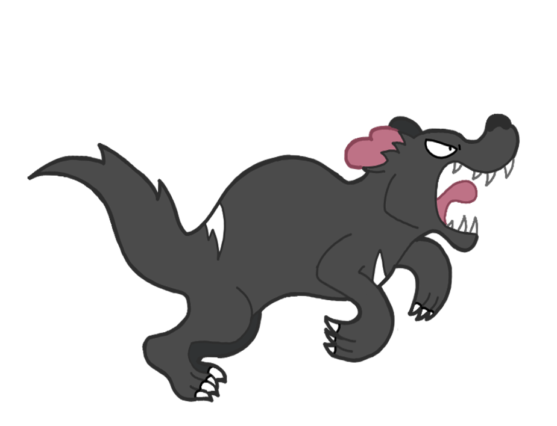
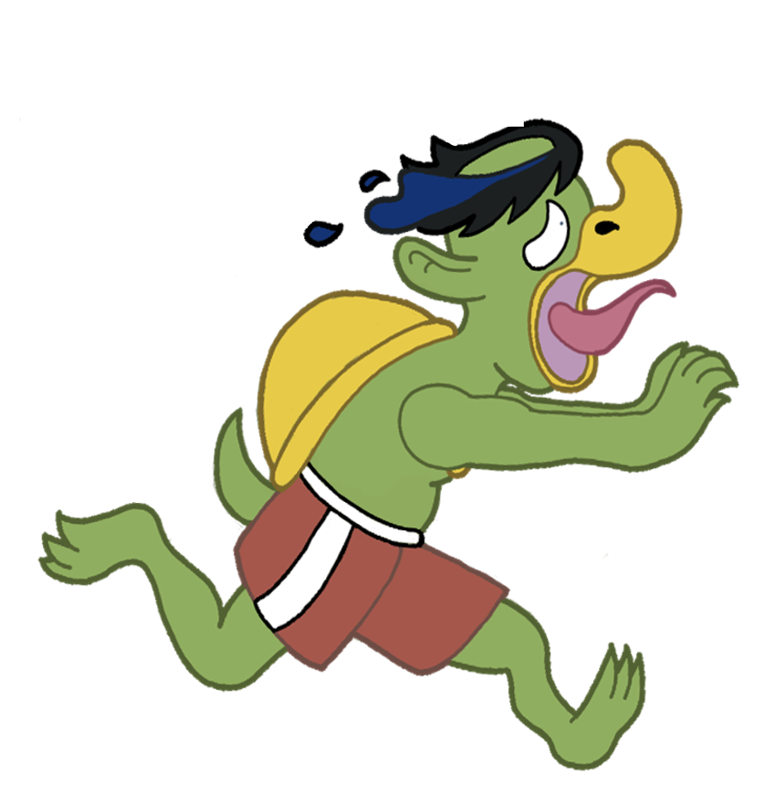

Lauren Cassiday
Howdy! My name is Lauren Cassiday, I’m a 2D digital animator with a
love for character animation, design, and props.
I’m a Flint, Michigan, native with an Associates degree in Fine Arts
from Mott Community College. After graduating there I continued my
education, earning my Bachelor's in Entertainment Arts Animation at
College for Creative Studies in Detroit, Michigan.
I adore designing and animating monsters, my portfolio and social
media accounts are full of animals, monsters, as well as cryptids. I
love taking a current love of mine, such as films and games, finding a
monster in it, and putting my own spin on it. Making everyone I design
be relatable, recognisable, and if at all possible, more friendly than
I found them. If their personalities shine through in their design,
and then translate in my films, then I feel I have succeeded. I also
enjoy exploring existing styles, and making props and new characters
to match!

